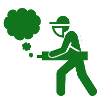

Termonebulización
Servicio de termonebulización mediante líquido sanitizante, ocupando equipo especializado para generar la nebulización que abarcará todo el espacio señalado.
Aspersión
Al sanitizar espacios abiertos se aconseja éste uso mediante mochilas aspersoras que propagan el sanitizante.